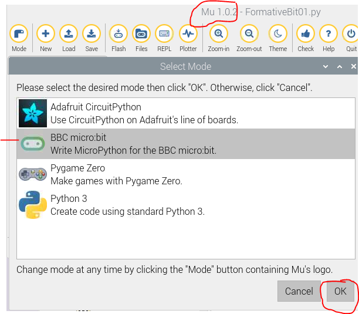
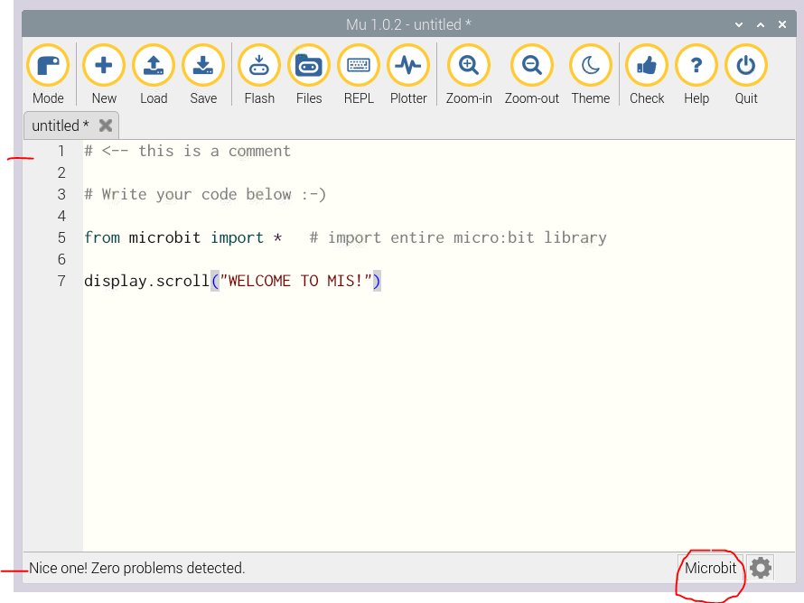
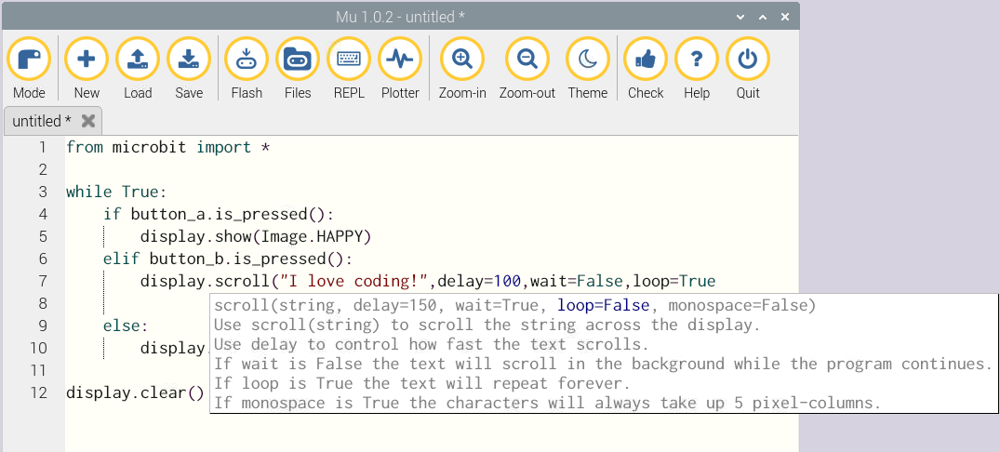
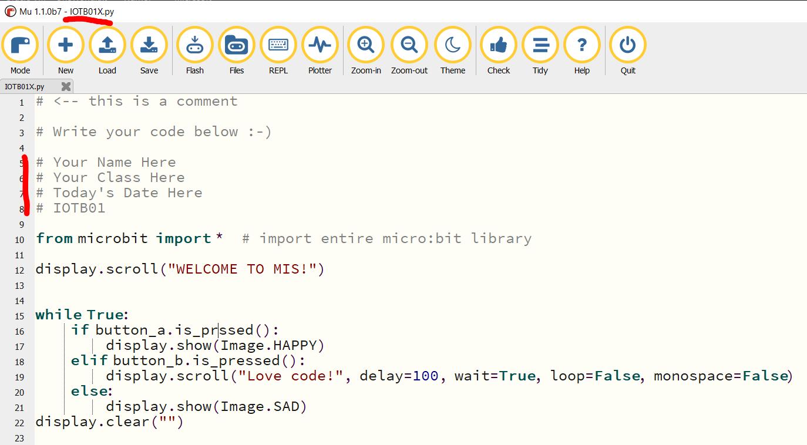

micro:bit Features
These instructions will show you how to create and upload programs into a micro:bit microcontroller. Microcontrollers are becoming common-they control automobile engines and subsystems. Examples. And they will provide substantial cost savings in automobiles, like Teslas. In later assignments you will continue working with and experiencing the capabilities of the micro:bit.
After completing this assignment you will be able to:
You are expected to have a working knowledge of microcontroller hardware and software. If you do not understand how to use an item, perform a Google Search, refer to the WSU Technology Knowledge Base, ask a teaching assistant, or ask the instructor.
Note: if the micro:bit is acting up, it may need to have the firmware updated. Instructions to update the micro:bit firmware can be found here: Update Firmware Current firmware Interface Version: 0253
The programs that run on an micro:bit can be created on many devices-a laptop or Raspberry Pi. In this exercise you will install the Mu code editor onto a computer. Mu is an editor used to program in microPython.
 Mu Mode
Mu Code Editor
Before proceeding, make sure that you have already uploaded / published this assignment to your course website. Then you will be able to view the remaining instructions and copy code from the assignment while viewing it in a web browser.
Create a simple program to scroll a message across the micro:bit.
# <-- this is a comment # Write your code below :-) from microbit import * # import entire micro:bit library display.scroll("WELCOME TO MIS!")
Next you are given a program that does not work, which means something is wrong with the code. Note that there can be multiple problems! Use your trouble-shooting skills to diagnose and repair the code. Hint: remember to 'Check' your code.
Another hint: make use of the function syntax. Syntax Checker
And another hint: if you try to flash a program that does not work, an error message will scroll on the micro:bit. This message may be lengthy, and possibly hard to read.
# Your Name Here # Your Class Here # Today's Date Here # u02 from microbit import * display.scroll("WELCOME TO MIS!") while True: if button_a.is_prssed(): display.show(Image.HAPPY) elif button_b.is_pressed(): display.scroll("I love coding!",delay=100,wait=True,loop=False, monospace=False) else: display.show(Image.SAD) display.clear()
Your screen shot will look something like this: Screenshot Format
Upload a screenshot of your work to the appropriate D2L Assignment folder.
(70) 1. Use a web browser to login to D2L. Upload your screenshot to the 'u02' D2L Assignment Folder. Save the screen shot as "u02" in your ' ' folder.
Browse to the micro:bit Tutorials page. Examine the available tutorials. Choose a tutorial of interest to you and read it.
Based on your experience in this exercise and the tutorial you reviewed, develop a brief statement about the value of microcontrollers as an automation tool for simple tasks in organizations. Think about what type of problems these devices could solve, and would it be effective? Consider the learning curve to program these devices.
When all tasks are completed press the Submit button.